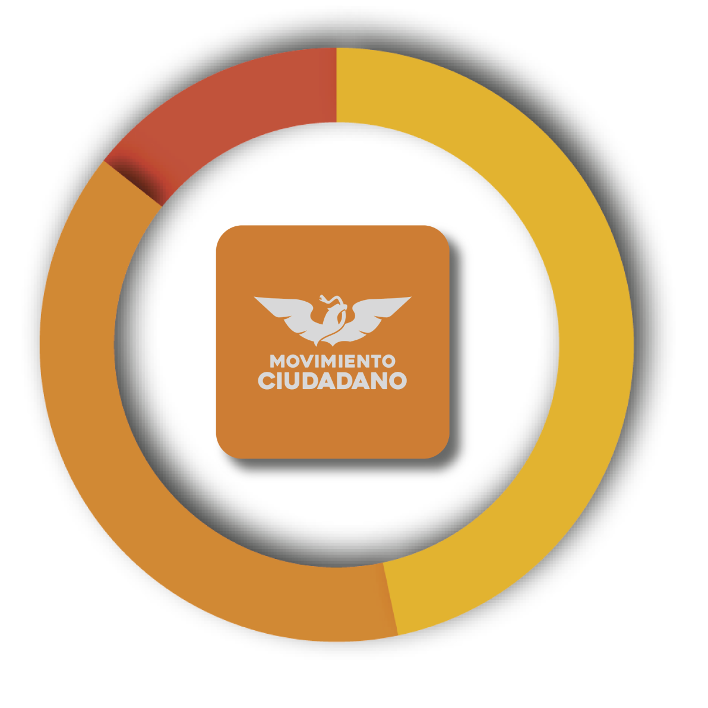
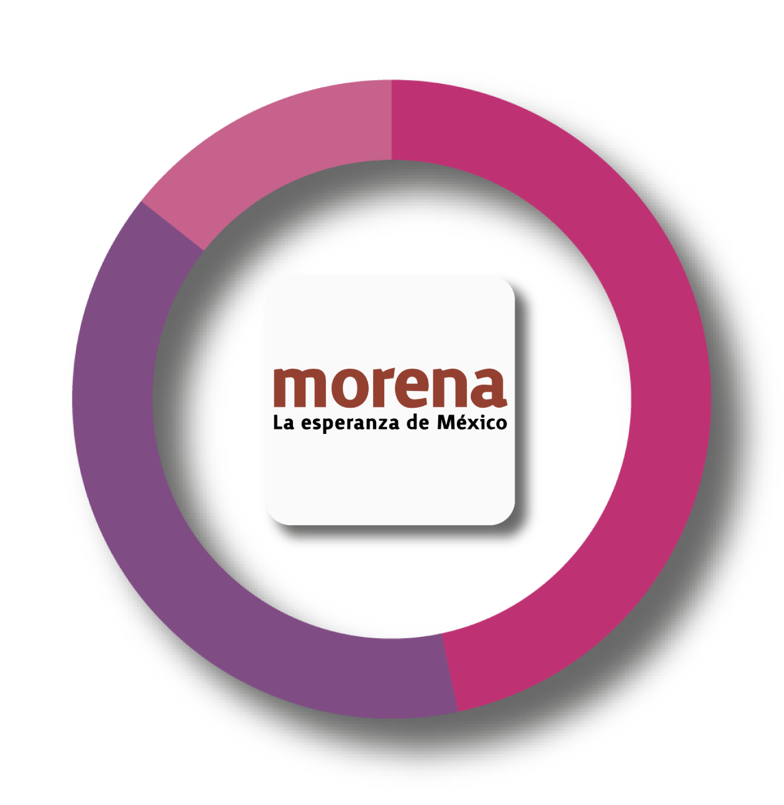
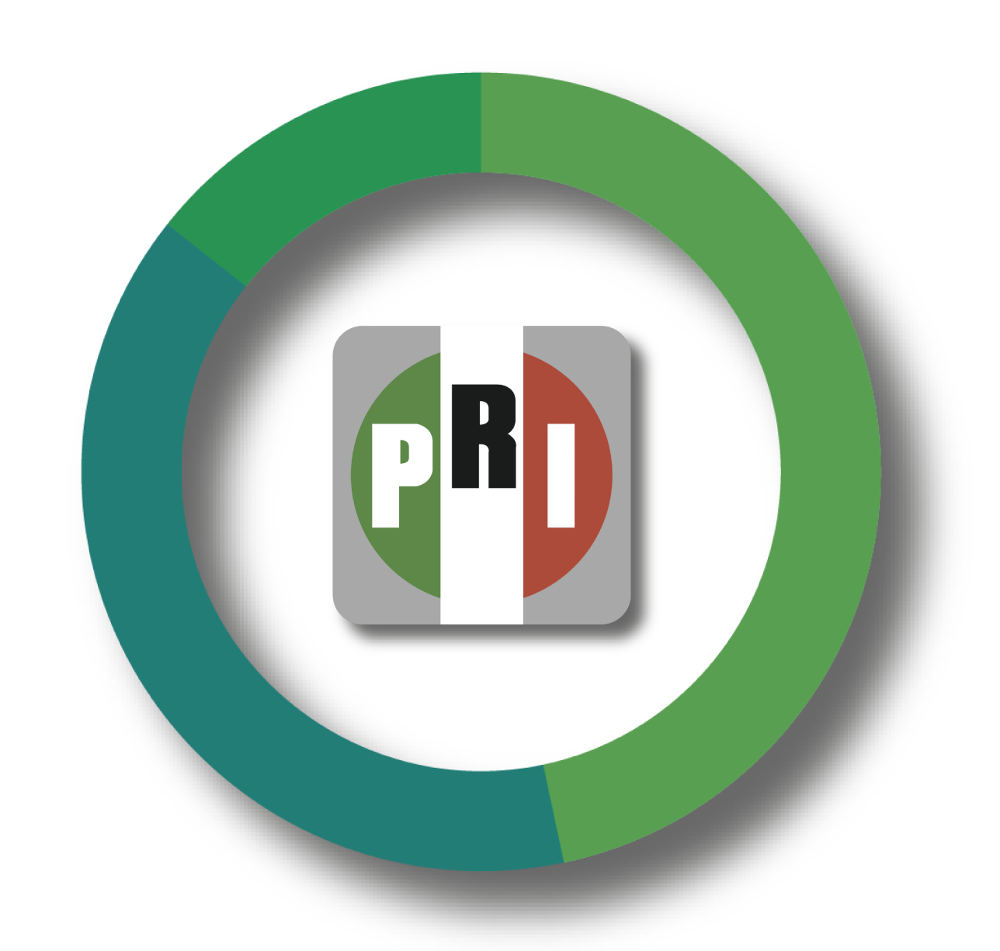
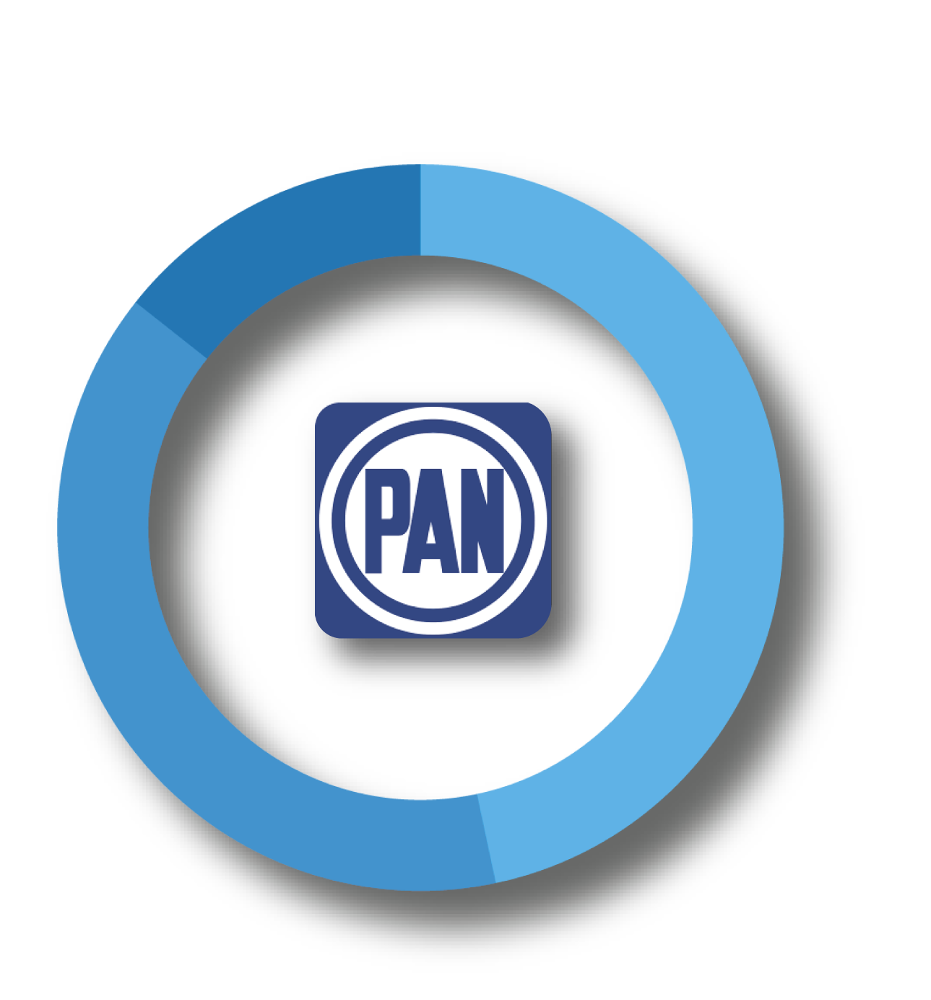

Alcance Social
36%
Impacto
28%
Influencia Social
16%

Alonso Danao
Alcance Social
2%
Impacto
46%
Influencia Social
0,3%

Arturo del Bosque

Barbara Cepeda
Alcance Social
16%
Impacto
46%
Influencia Social
4%

Amal Esper
Alcance Social
8%
Impacto
36%
Influencia Social
2%
Base D XIV
132,936 Coahuilenses
Indecisos
12,896
Arrepentidos
2384
Pro Oposición
9,853
Audiencia Digital
95,125
Mejor Horario:
8 - 2 PM Mujeres
2 - 10 PM Hombres
Competencia:
235
Afiliados:
412
ActivosDigitales:
1256
Tracking:
456
Alcance coalición:
52,845
Influencia:
14,684